请赐给我写作的时间
—敬致读者的一封总覆信—
冯冯
迷失在未来 / 誊录
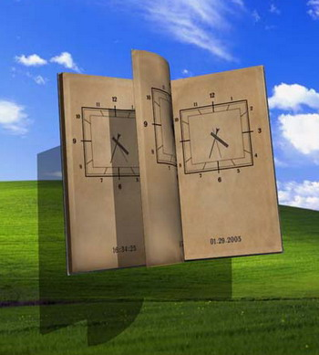一九八七年九月到十月这两个月内，我没有写过一篇文章，别说一篇，连半篇也写不出。可是我没法子，因为我太忙了，我现在每天收到从世界各地直接寄来我家的来信，多达三十封至五十封，我每天的时间，全都用于读信及写信回覆给这些读者。信件越来越多，现在堆积的也还有三百多封，还未计算由天华公司收到而仍未转寄到达的那一大批，和其他佛刊及外界刊物收到待转的信件。
我这样公开报告，也许有人以为我夸大，其实我并非渲染，那全是事实。我每天得上邮局寄信两三次，每次一大袋，我已经成为邮局最熟的常客。邮局分局的女主任时常笑脸相迎说：“大主顾，您早，今天又寄一大批？”她又常对职员们说：“彼得是一天来邮局三次的大主顾，带给加拿大邮局不少收入。”
这位洋人女主任柏丝不算过分夸大，因为我平均每天得支付十多二十元元加币购买邮票，有些还得寄快信或挂号。我的微薄稿费收入，早已全部投入这项回信邮资支出了，算一算，一个月就是两三百元美金，一年三千多元美金！在经济方面，我不知道我还能这样支持多久，因为，我不是全力写作，稿费所得有限，多时以来越来越集中于佛教文章写作，早没有对外刊投稿了。而我做这些服务，并没有得到任何佛教寺庙或教会的经济支持，半个铜板也没有，都是我用我“爬格子”的所得来付邮费的。我不是出家人，只是在家人，又是在自己住宅，不能算是弘法，既不是寺庙，也不是教会，没有人捐香油，也没有人帮我。
| 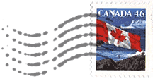 | 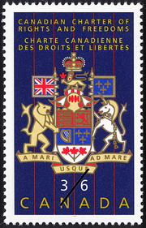 |
我不是在这里叫穷或向人求助，我的个性倔强，认识我的人都知道我从不向人求助，也从不向人伸手，什么都是自己忍受和应付的。本文并不是化缘，幸勿误会！我只是要解释清楚，让读者知道我已经无法应付得了那么多来信。
非但经济上我已经无法应付，就是时间，也不够用了。我为了尽可能回信，就已经没有时间去写文章了。这几个月以来，我都在拼命写回信，每天写到手痛，也还赶不出来，哪能写文章？您不妨试一试每天写三十封信看看！您就会知道这滋味了。
| 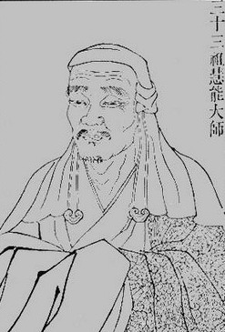 | 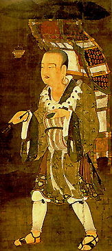 |
写回信占尽我的工作时间，以致我的写作全部停顿。两年前开始动笔的百万字佛教小说“从玄奘到慧能”（暂名），只写了十万字，就已搁下来，两年来，抢时间写佛教圣乐大合唱，至今只写成了七曲。新的灵感“观音菩萨摩诃萨”交响乐大合唱，与其他各曲，都只写了主旋律，就搁下来了。新的尖端科学印证佛理文章二十一篇，也只写成了五篇……全部都被回信占去了时间，全都停了摆，还不知道哪一天才能恢复！
可是又不能不理会那些潮涌而来的信件，无论怎样保密，我的地址也还是有人知道，一传十、十传百地传遍世界各地。从台湾香港寄来的信最多，从美国寄来的信其次，南洋各国又其次，中国大陆与欧洲来信数量第五，加拿大的最少，可能是因为人们可以来面谈。（印度也有几封，而且是印度人。）
各地来信的内容，可以大致分为下列各类：
第一类：是向我要求诊病的，这些信，大多数是自己有重病或亲人有重病，或是朋友有严重的奇疾。有些人寄照片来；有些人不寄，光是写名字与年龄住址；更有些人连病人住址都不写。寄照片的，有些是彩色生活照，有些寄来的是从巴士月票上或学生证上撕下来的小照片，有些人寄来咸丰元年的照片，有意考一考我，到底照中人是死是活？
这些求诊的信，只有百分之五会附寄一点点邮资来，大多数都不寄。有些把全家的照片都寄来，有些把阿姨姑妈姑爹表兄外甥全族的小照都寄来，十多二十多张，叫我免费看病。这些照片，指名要退回，还指名要航空双挂号，光是回这一封信的邮资我就得赔贴十元、八元加币了，更别说挨个为之写下诊断说明，回他一封信就得两天时间。来信人有些以为我的邮资是由什么佛寺支付的，有些人认为是天华公司支付的，有些认为是温哥佛教会支付的，没有人知道是我自己用“爬格子”的稿酬来应付。有些人以为我有秘书代我回信，因此，他特别指定，必须由我“亲阅亲回”，而且要“立即”回覆。
不管怎么样，人家总是有病来求诊求治，这一类来信，我总是尽量赶时间优先回覆的。而且在信末顺带劝他们尽可能多行慈悲善举，更劝他们吃素戒杀生，劝他们读佛经，守佛戒。
疾病都是有因的，有些是业障病，有些是因果病，有些业障因果是前生的或多生以前的，有些则是今生的。提到前生多生业障因果，就很不容易叫人明了，说出来，也难叫人信服，所以我很少将他们的前生业障指出来，我都是着重于指出今生的业障果报而已。例如，来信求诊的病人之中，以癌症为最多，其中又以肠癌为多。我不得不指出这是他们多数吃肉，尤其是烤肉的现世果报。我劝他们学佛、吃素、守戒、行善、布施。我提供素食的食疗方法，劝他们实行，这样劝人，在我认为是我应该做的，也没做错吧？可是也还是有些大德痛斥我是“天魔”附体，“行邪道”！我现在已不理会这些责难了，问心无愧，所做的是学佛人应做的事，随他去骂吧！佛陀不是教人要忍受一切毁谤吗？我应该学忍才对，其实连提都不该提才是，我到底也还是凡夫俗子哪！不过，佛经也有说过，谤人善行者，是有因果的！我也还算不上是善行，只是聊尽学佛人的心愿而已，随他谤下去吧！如果他们有更佳的素食疗法，我是祷愿他们也慈悲帮助病苦众生，我绝不会嫉妒，更不会以耳代目生分别心而毁谤他们是天魔的。
佛说：“亲人施道，助之欢喜，亦得福报。”（四十二章经）
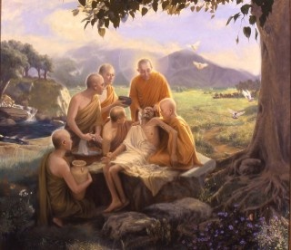有些大德斥责我，并说“病是业障果报，不应救活的。”这口气听来真是奇怪，这还像是佛教徒口吻吗？佛菩萨况且入地狱救度罪人，不是么？我何人？怎敢裁判他们的罪业？我何人？敢不学习佛菩萨的慈悲？我无能入地狱救度罪人众生，我不是菩萨，我只是凡夫俗子，我也不能包医百病，难道不可以用我微末的能力为人诊病治病吗？不该救治和接引病人觉悟业障因果吗？不该接引他们忏悔和学佛修行行善吗？佛陀有说过凡是有病的都该死吗？不该救度吗？诸菩萨以救苦度厄为弘愿，诸经都以行善救度为首善，不是吗？
佛言：“众生以十事为善，亦以十事为恶。身三、口四、意三。身三者：杀、盗、淫；口四者：两舌、恶骂、妄语、绮语；意三者：嫉、恚、痴，如是十事，不顺圣道，名十恶行，是恶若止，名十善行耳。”（四十二章经）。
基于此信念，我这个学佛人是见人行善就心生欢喜的，我不会心生嫉妒，更不会去批评人家行善行医是什么天魔，我巴不得人人都学佛、吃素、守戒、行善、互助。我见人行善，我只有满心欢喜赞叹，我自渐不如，只有更加努力精进不懈，见贤思齐。
十年以来，我尽微力去诊治过不知多少病人，如果说有万人以上，大概不算是虚报大数吧？我都是以素食疗法来帮助他们，并且一一接引他们学佛修行为善去恶，劝请他们布施及放生。这些病人之中，很多是无信仰或信仰外教的，他们纷纷接受了佛教，也纷纷戒杀生，有些还发心布施行善。这些都是我引以为慰的事，我仍会继续做下去，纵然仍被某些大德斥责为“妖魔”“沽名钓誉”和“牟利图财”，我也还是要我行我素的。
说到沽名钓誉与牟利图财，我却有更好的方法。假如以我今天的微名，在中外的电视上亮亮相，表演两手，或者在商业报纸上刊登一幅巨大的广告：“××天眼通候教，解答人生哲理、财运、风水、前途、婚姻、恋爱，等等疑难，驱邪赶鬼……”，大概也尽可以生意兴隆发点小财吧？又假如我再在报刊上刊出一幅照片，作一番潇洒状，在什么什么大酒店租一间豪华套房“候教”，墙上挂些名流题字，和显要或明星的亲热合照，还怕不发财吗？再自称是什么“大师”什么“大家”，还怕不大名轰传？我却都没有这样做，宁愿默默笔耕，用稿酬来付回邮邮资和赠药。偶有收到善心的捐款数十元，也都用于这些用途。并非自命清高，而是因为笃信佛教，不敢有昧良心，而且也敬畏因果！
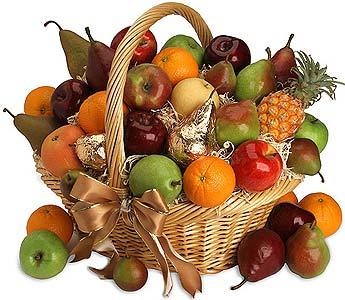 名与利，谁能完全放得下？能淡泊一点，就算不错了。我自问也未能做到完全放下名利，也还是喜欢听人赞我好，像小孩一般喜欢听见人家赞他“乖”。我也还是喜欢“钱”，因为有了钱才可以买邮票付邮资去回信给求助的病人，和寄药寄素食给需要的人，有钱才可以买蔬菜水果供佛及以素食招待访客，我自己也可籍此解馋（我始终还是不脱猴性，爱吃果子）。我觉得名与利，若连用来利众益群，那就不是坏事，但若用来满足自己私欲贪心与奢华物质享受，那就是坏事了。学佛人应该放下名利心，不过，假如太极端，恐失中道，也就未免流于矫揉造作，失诸自然了。我有微名，是努力写作佛学与科学接引众生的副产品，不求自得，是大家夸奖我，并非刻意求名而获。有此微名，优点是较容易接引众生，缺点是若一沾沾自喜或重视名利，则难免陷入魔障。我是很警惕的，如履薄冰，兢兢业业，不敢利用这一点微名妄作胡为，是以我拒绝上电视及拒绝接受报刊访问，也拒绝被刊物刊登照片。除了法会之外，不参加任何公共场面，我不与显要名流酬酢，我是个连女朋友都不交的修行人，隐居写佛教文章，当然也更不会闹任何桃色新闻。某些著名的心灵家或术士，所过之处，大登广告，一大批影星歌星美女拥簇而行而坐，那是我所不愿为的，我总觉得自己虽是俗人，却又不属于俗世！
不过，假如完全无名，那么又有谁看冯冯的佛教接引文章呢？所以，是不可走上极端的。这是很不容易摆脱的尴尬──又想运用微名来弘法，又想摆脱名利。我想这也并非我个人的“障碍”而已，恐怕就是连那些高僧大德，也都有同感吧？试想，没有名的和尚讲经与有名的法师说法，两者比较，谁的道场较多听众呢？我想人总不可能完全摆得脱名利，只要淡泊为志，不贪不着就好，以弘法利众为念，以慈悲为怀就好。这是我的看法，至于谁仍爱骂我沽名钓誉牟利自肥，是妖是魔，本来我早已接受读者来书的意见：“置之不理，也不必在文章内多提。”就多提这一回吧！我认为批评别人，最好是自己首先反躬自省，平心静气一点，看清楚真相才好，信口雌黄中伤他人，不是学佛人所应为。嫉妒是修行的最大魔障之一，不可不知，这一点我常警惕自己。我看见别人弘法行善，我只有赞叹和追随的，从不嫉妒，古来大德讲经说法，言不及私，华严经有一段大意说：“不轻毁，不轻誉。”良有以也！
一下子扯到题外那么多话，抱歉抱歉！可是我想趁此与您多沟通一下，让您比较深入明白我的处境。
第二种最多的来信与电话，是家庭问题，要求我协助解决的，这一类最令我尴尬。举例说：香港有一位女士，连续打了很多电话来要求我为她“缉拿”她丈夫的情妇，“你快给我查出那贱货姓什名谁住在何处，你要多少钱？开账单来，我付得出！”
“对不起，我是修行人，”我有礼貌地回答：“不可以卷入别人的家庭纠纷。”
“你有天眼，不应该服务我吗？”她说：“我付钱的呀！”
“你找错人了！”我笑：“我向来不管这些事！”
骂了我，她却又寄信来，内有她丈夫的照片，还有一张空白支票，签了名而未写银码，她说；“冯先生，随便你填上银码，只要你肯帮我缉拿该名贱货，我不在乎钱！”
“有些人以为有钱就可以买得到任何一切，我也很爱钱，”我回信：“但是，这种钱，我不能要！这种事，我不能做！支票与照片璧还！”
她后来又再来信：“知道你很喜欢劝人捐款给佛教慈济医院，假如我肯捐一笔钱给慈济医院，你肯不肯为我服务呢？”
我这样回答：“我劝人捐献给任何慈善机构，都是不能有附带条件的。你若有心为善，就不应提出条件要我为你做那样的服务，假如这是你的条件，纵使你捐钱给慈济，我也还是不会答应你的。你若为了自私目的而捐钱，就不是慈善，你的家庭纠纷应有你自己解决，恕我不能再覆信了！”
这是很典型的一种来信，虽然其他同类来信不至于如此无礼与不讲理，也有不少是认为我有义务解决他们夫妻纠纷或男女怨恨的。什么太太离家出走，先生有外遇，先生打老婆，太太是河东狮母老虎，什么分居离婚问题，什么太太是否红杏出墙？什么男朋友是否另有新欢？什么女朋友是否别恋？什么丈夫爱赌钱爱上酒家，又什么太太日夜沉迷于打麻将……还有，什么男朋友的性要求太多，是个色魔，应该如何对付？又什么女朋友是性冷感，应如何将她变冷为热？还有犯了六波罗夷的，还有守不住空门禁欲生涯的，问应如何处置？还有暗恋比丘的，问应如何解决……洋洋大观，无奇不有，这些信件，每天总有五封至十封，来信都要我守秘，又都要我用神通法力帮忙。
冯冯是个从未结婚也未恋爱过的独身修行人，五世童子，那不必说了，今生也还是修行清净无欲洁净的，自己毫无那些情欲痴迷之苦，也无家室之累，更无男女纠纷烦恼，如今可招得成千成万的这些麻烦来了！那么多人的情欲痴迷烦恼痛苦，都找上我来了！天哪！天哪！
| 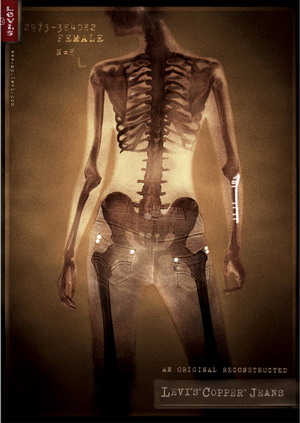 | 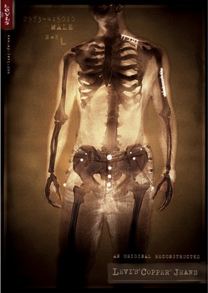 |
我很少有空回覆这些来信，如果要回信，也都不卷入，只是劝他们多读佛经，吃素，守戒，戒除“嗔”与“痴”，叫他们运九想除六欲。在这里，我算是一次向他们总覆！可不是？有佛经佛理那么好，为什么不去学呢？为什么不去学佛学修清净行呢？学佛人为什么不学习断欲舍爱呢？佛经的真理与修法就是教人断除欲爱与烦恼的最佳法门，也是教人消除恶业的，为什么学佛人不向佛经佛法去求道？却向一个平凡庸愚的我来求助？这不是舍本逐末吗？纵然我有一些小小的微不足道的神通，又怎能为人消除业障？来信往往自称：“自知罪孽太深，恳求居士慈悲救我出苦。”这是缘木求鱼！须知神通并不可恃，神通是戒定慧的副产品。断除欲爱嗔痴业障，不可能从他人外力而成功，必须由个人自力去守戒明理，由戒定生慧，才可以断除一切烦恼！别说我这营火之光不能代人断除一切烦恼，就是佛力无边，可以拯人出苦，可以度厄，但是说到烦恼，勿论是贪，是嗔，是痴，是欲爱，是嫉妒……都是须由个人自己去修行明心见性，才可断除！这完全是视自力的努力而成，所谓心魔仍需由心王医治！个人自己努力修行吧！请不必再以此等烦恼来找我，因为我根本没有神通可以为他人断除这些欲爱烦恼！
一般说来，对治“贪”的最佳方法就是减少物欲而多行布施。医治情欲的最佳方法就是勘透人生六欲七情的短暂与虚幻。所谓“情”，所谓欲，所谓痴爱，都只不过是自己着迷，掉进“自我”的独占欲与好胜心的陷阱而不能自拔而已。你眼中的西施，可能在别人眼中是无缘；您心目中的英俊白马王子，别人心中却是一个汗臭丑男。您朝思暮想，一心想占有她或他为最高无上的幸福，其实，您追求的只不过是您心中的幻想幻相！有一个笑话，有位仁兄看见某家饲养的名种法国贵宾狗那么漂亮，他是吃狗肉的，他总幻想着，这只名犬的肉有多香多好吃，他费尽心思，终于偷了这只名犬，一棒打杀，煮而食之！“怎么样？味道与众不同吧？”朋友问他。“也没什么特别呀！”这位吃狗肉的仁兄说；“还不是和别的狗肉一样！”
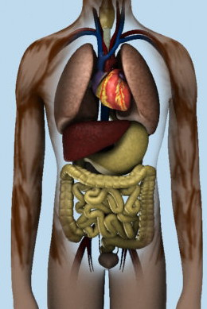 罪过！罪过，写佛教文章，竟扯到吃狗肉来了！不过，我告诉你们，实在地说，痴情欲爱，还不是跟这位偷吃名狗的仁兄心理差不多！情欲还不是跟吃狗肉一样可怖？仍然痴迷于情欲的人，不妨想像一下，你们拥在怀中的赤裸情人，跟那位仁兄一棍打杀之后，又用开水烫脱了毛的名犬狰狞露齿的样子有何分别？如果你们以为这是过分的比拟，不妨去屠坊参观一下那些不幸的猪牛，血淋淋的尸体，你吃得下咽吗？你所羡爱的白马王子或美女，只是皮相遮住了那体内的血淋淋心肝内脏白骨而已，你自己也是，看看不心惊么？还不赶快斩断痴情欲爱？还不赶忙吃素学佛，修修来生？用不着去屠坊，您就到肉店去看就够了！人体其实跟那挂在钩上的猪牛构造分别不大，解剖了就越能看见相似相近啦！若说这太恶心，您不妨去什么宿舍参观一下半夜熟睡的人，假如您看遍了几十个人的睡相，假如您看到了您梦寐以求的美女或美男子的熟睡之相，您就会明白了为什么世尊以太子之尊，看见宫女熟睡横七竖八之相而感到色相的虚幻了。
这上面几段，算是总覆那些为情而痴为欲爱而烦恼向我求助的人，我不会在个别回覆了，请您多读佛理多摄心修行吧！少看那些痴情欲爱的所谓爱情小说与电影吧，怀着幻想自作多情的情人满嘴谎言甜言蜜语，追求到手反正就是那么一回事！
第三类来信是诚恳问道的，问我该如何修行，读什么经，怎么打坐入静，怎么念佛，为什么念佛那么多都无感应？
我不是佛学专家，也不是修为很有成就的人，我读的经，也不比您多。我只是一个平凡的学佛人，唯知吃素守五戒，念佛，劳动，平常心就是道。我并不刻意求感应，我也不常打坐，并不刻意求入静入定。什么双盘单盘打坐，我都全不会；什么数息观心，我也不会；什么吐纳那些道家功夫，我都不曾学过；什么密教大手印，我也不会；什么西藏禅坐，我也不懂，我一概没有秘诀。说到打坐，我天天写稿或读经看书，就已经坐到发麻啦！我还打坐？巴不得去跑步散步游泳才好，爬树就更合吾猴心意。我家后园有老梨树，高三十尺，树上有果子，正合吾意，爬到树桠上吃果子！这就是我的真实生活写照，坐在树桠上，悠然自得，散步在无人海滩，远眺海景，也自然入定。在家听听古典音乐，也能静定，静时一刹那是永恒，定时外缘悉消除，仰观白云蓝天，也生静定的禅悦！我实无秘诀可以奉告，以上就是秘诀了。
佛法八万四千法门，并不限定于一门。我接受南禅，却也同样接受密宗，也修净土，亦念法华，更学华严，也研阿含、楞严、楞伽与金刚诸经，我并无什么特别的秘经，更无特别的秘法。我认为学佛人应广读佛经，多看佛论，涉猎须广。您问我哪一经好？我说是本本佛经都好，门门皆好。
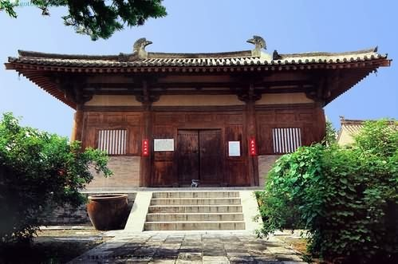 您问我为何念佛没有感应？我认为念佛心中平安平静舒畅，就已是感应。您若期望念了佛就全身摇摆或眼见佛菩萨，那可是“以相求见”。金刚经不是说若以相求，则不得见如来吗？至于全身摇摆，可能是佛力感应之一，亦可能是您自身的电磁场的摇摆，更可能追求见相而产生幻相。实在说，佛菩萨都是无色无相的大能或大力，有相俱幻，偶然也随缘幻化幻相，但为方便接引而已。您若以幻相为真，就很危险！因为，很容易找来邪魔幻化为佛菩萨，寻您开心，或是引您入邪。小心，小心！最好最安全的方法，就是见幻相不须心喜，也勿惊，立即张开眼睛，幻相自消，身体自然停止摇摆。须知，佛力有时引发您身体电磁震动，但是，更高一层次的感应，是不摇摆不振动，另有无形无相的感应，即所谓“法喜”，那是文字无法形容的一种感动感觉。
总之，学佛应该多读佛经佛论，先筑基，不可以急进求功，不可以求神通为出发点，不可以“相”求。
有人问我应追随哪一位法师？我的答案是：每一位大德各有其成就特色，都值得我们学习。
有人问，皈依某师之后，发现他的行为不端，应如何处理？我的答案是：佛经说依法不依人，依正法不依邪法，依正人不依邪人（大智度论亦有此说），皈依只是形式，并非卖断与谁为子为奴，善者以之为师，恶者虽曾为师亦非师！
有问：应向何处道场出家？我的答案：处处都是好道场。有问法缘在何处？我答：法缘在佛，何处都是法缘。心问佛，虽在市井凡尘亦有法缘；心无佛或生退意，纵在名山禅院也无缘，无异世俗游客，登宝山而空回！
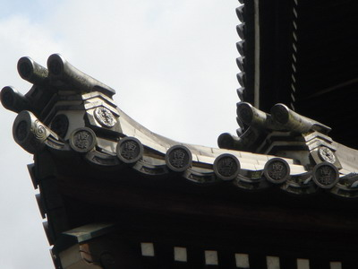 第五类来信，问我应如何办理移民美加，这一类以出家人来信为多，其中有些要求我担保及供养来美加弘法。有几位出家才两三年的比丘尼指出这是我的义务，叫我必须以迎接法师出国为第一要务，其中一位尼师还要问我：“你当年是如何移民去加拿大的？”
我在加是无业游民，至今仍要靠台港稿费维生，在经济上，我是不够资格担保任何人来美加。其次，美加移民法很严格，很复杂。想移民，一般人没有亲属在美加，是必须独立申请的，或者是投资移民，或是特殊人才，自己向美加申请。若是法师，须由美加的佛教机构担保，我不是佛寺主持，我没有资格担保法师移民来美加。
至于那位尼师像审案子般问我当年是如何移民的，这口吻很不像一位有道法师吧？我怎样移民来加，是我的私人事务，无须公开，其实，也无妨公开，我当年是以名作家身分，收到加拿大邀请移民的。您须知我并非今天方有微名，早在二十多年前，年未弱冠，就已经也算叨陪作家末座了。我应邀移民加拿大，是一异数，因为彼时加拿大移民大门比今天更严谨，显然是观音菩萨的意旨叫我来美加。我从当年的名利繁华跳出，来到加拿大，先苦干了十多年，又潜心苦读佛经辛勤劳动，写作佛教文章十年，我也没有什么成就，来了加拿大，也没有什么好处，除了劳动和苦干，没有什么，应是乏善可陈！活受洋罪！若说来向西方人弘法，我这能用英文讲经的人也还未能做到。
第六种来信，是诚意指教我的，有些读者不厌其烦地指出我的拙作的缺点，并且向我提出很具体的修正意见，这一类来信，我很感激，也尽量采用他们的宝贵指示，尽量去修正我的错误。
不过，有些人提供资料是较为不合理的，或是对我的拙文未真正看清楚的，或是他们的资料较为陈旧过时的，或者是空洞而不具体的，这些我也都列为参考，也同样感谢！至于那些武断而非善意的批评，我也一样多谢，不过我未必能依照他们的意思去“删掉”那一页那一段了。
第七种来信，则是很有偏见很不客观而且很不礼貌的恶意抨击。这些信每天也有三两封，包括外教人士命令我“悔改”的来信，和叫我认识“真神”的信在内，还有向我挑战的，要比划比划的，要和我“讨论”的……我都是一笑置之，将它投入垃圾桶内，例不回信的。再多写来，我会认得，那就连拆阅都免了，一概投之炉内可也！我不喜欢与人争论，我从当年初成微名起，早就习见这些恶意抨击的信件，笑骂由他，谁要浪费时间，活该！
第八种来信是叫我用天眼侦查刑事犯罪案件的，凶手是谁？藏在何处，又有来信叫我寻找失踪人口的，也有人来信叫我驱邪赶鬼的。
我可没有这些本事，请勿再来信吧！我连书本放在书房内哪一层书架都找不到，休说千里之外寻人或侦查凶犯了，抱歉，恕我不再回覆！因为我没有时间也没有邮资应付太多人，说到驱邪赶鬼，我就更不会了！抱歉，我也不敢得罪鬼神，凡事皆有因果，不可妄为！
第九种来信，是要与我做笔友的。我倒巴不得还能像十多岁之时，大交“笔友”，没话也可写三张信纸，可是现在真是应付不过来了。
第十种是向我索取照片的：抱歉！我碍难遵命，我不是明星，我认为作者与读者之间的沟通，应该是在作品上及信仰上的心灵接触，而不须交换照片那么俗气
有几封信是小姐写的第二次来信，用激将法，问我是不是怕被人看到又老又丑？所以不肯送照片，也不肯在作品书末刊登照片？我的答案是：“是”，也“不是”，为什么你们要那么执着于皮相呢？美与丑，少与老，有什么分别？无非都是幻相皮相而已，我的文字是要接引你们学佛信佛，不是要推销我自己！你们不去学佛理，却要看我的照片，可见你们根本还是没学佛！还是着相！以后我也不再回答了！你们主动送玉照给我，我也不投桃报李的。
第十一种寄来邮件，是赠送佛刊佛书给我，以方便我转赠慕道者及转寄给中国大陆的佛教徒，这是我很感谢的。像李炳南老居士的遗作“当生成就之佛法”，天华公司印赠的，我就一直在赠送，最少送了上千本，其中有些是寄给大陆同胞佛教徒的。我现在很需要的是像那样薄薄的小本子轻便的佛经，尤其是“普门品”（天华公司已印赠）以轻便为佳，方便我转寄给在大陆上得不到佛经的佛教徒，最好是单张的，当作信件寄去，以免被大陆的海关检查扣留没收。中共的海关法规仍是禁止所谓“反动书刊”进口，佛书仍被中共视为“反动”“反革命”的。但也可节省一些邮资。（每寄一封信，我须付出大约美元一元，若是厚而重的书，那就可能须付出十多元美金或加币，我无力负担太多这些邮资的。）
第十二种来邮，是对我赠送佛教及一般纪念品或冬菇之类素品干菜的。这类我也很感激，不过，我家狭隘，没有地方挂起那么多名人字画。当年王云五老先生在他书房内接见我，亲笔挥毫写给我的一首诗，梁寒操老先生特别题赠我的诗……等名流的墨宝，至今也仍无处可挂。如今越来越多名人题赠了，裱书是一大问题，悬挂又是一大问题。不挂呢？又负这些名人的爱护盛意，挂呢？没有地方，而且我也感到挂起名人字画，颇有些附庸风雅的观感。当年与几个显要的偶然合影，我也不敢挂出来，因为很俗气，很有些趋炎附势的味道！我喜欢我家“家徒四壁”的空空白白的粉墙，窗外映掩绿叶远山蓝海，这就很够了。
至于纪念品，也放不下了，只有赶快转赠给虔诚的佛教徒，像“慈心佛经流通处”郑明贤居士长期寄来的小小佛卡，就最适合我赠寄各地佛教徒，我寄送了很多很多，佛书也寄送了很多。
干菜则请勿再寄来了，因为寄到时往往已因包装损坏而变质，不能吃了。寄赠者用意至善，是给我开法会时斋众使用的。舍下经常有一百多人来吃斋拜佛念经，好在买得到斋菜素料，此地唐人街有卖素菜的，也不贵，你们寄来反而贵了。
还有赠送衣物给我的，我现在御寒衣服已很多，有好多夹克，我也不太怕冷。再冷到摄氏零下二十度，也只是穿一件卫生衣，外面一件外套，从不穿大衣。家母较怕冷，但很多人送寒衣给她，也够穿了。所以请勿再寄衣物来，你们的好意，我很感谢，请你们把钱物多捐赠“慈济基金会”或其他慈善机构帮助那些需要的人吧！那比送给我更有意义！
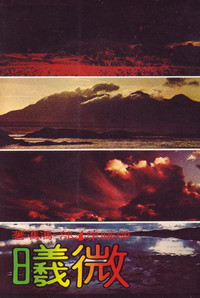 第十三类来信是我的文艺作品读者，想不到还有人写信告诉我拙作“微曦”等等各书如何使之感动。这些来信者女子男子各半，他们大都是新的年轻一代，从未见过我或我的照片的，也有中年一代读者，他们记得我二十多年在台北上电视亮相的窘态。我已经无暇再写一般文艺作品，十年之久，仍有读者来信，不能不令我感奋。不过，这类读者，每每向我索取签名照片，又问“微曦”是否我的自传？答案不是。又问我为什么那么“神秘”（外界报刊多次称我为“最神秘莫测的作家”，其实我毫无“神秘”！只是平庸平凡，不愿再向外界公开露面。）我不喜欢“作状”，更不喜欢世俗应酬与那些名作家名人们在一起，听着是是非非或那些虚假虚伪的对话！或俗不可耐的名利话题，与你虞我诈的或你妒我恨的言语。我很抱歉叫这些文艺读者失望，因为我早已退出文坛，我对文艺早已无兴趣了，我大概也不会再写所谓文艺小说，我仍将只写佛教科学与作佛曲了。我也不可能回信给你们，请你们原谅，也请你们看佛教刊物与佛经佛书，也许你们会从佛刊中看到我的文章，让我们在佛法佛理之中沟通心灵吧！
这篇随笔是太长了一点，但是我不得不这样详细解释清楚，我并无为金钱化缘的目的，我只希望读者了解我多一点，别再滥写来信给我，使我不胜负荷。须知我已无法应付那么多人和那么多信，诚如李云鹏老居士在电话中所说；“这只不过是刚刚开始，将来还会有更多的来信找你！”
李老居士问我：“天华收到很多很多给你的信，应该怎样处理？都转寄给你吗？”
“我也不知道该怎么办？”我说“我真不知道，我已经日夜在写回信，什么事都不能做了，文章不能写了，经不能看了，佛教圣乐也不能写了，一大箱一大箱的来信，也不知道有多少封，摆满了一书房哪！”
也可以说我向读者您化缘，我要乞化的不是金钱，而是时间！请尽可能减少写信或打电话给我吧！
是的，时间！请给我时间，让我恢复写作我的佛学科学互相印证的文章和佛教圣乐！
原载《天华》第105期：1988年2月1日
原载《天华》第106期：1988年3月1日
原载《天华》第107期：1988年4月1日
原载《天华》第108期：1988年5月1日